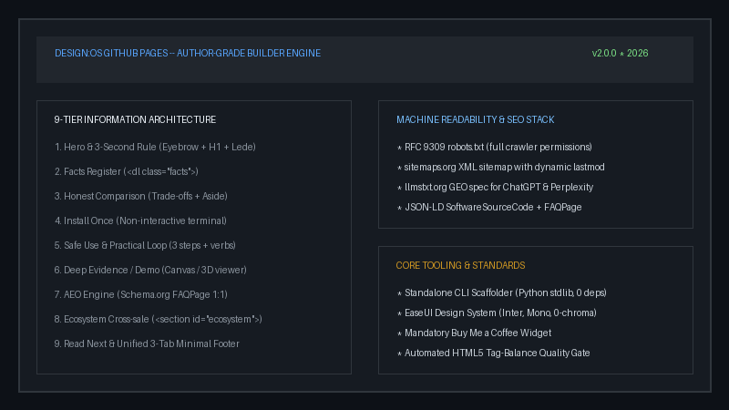

DESIGN:OS Toolchain · DESIGN:OS GitHub Pages
Author-grade GitHub Pages marketing & documentation engine for builders and AI coding agents.
Universal zero-dependency GitHub Pages template, CLI scaffolder, and 9-tier layout engine with built-in SEO, XML Sitemap, llms.txt (GEO), and Schema.org FAQPage (AEO).

DESIGN:OS GitHub Pages in operation: deterministic execution with verified output contracts.
production build · verifiedWhat it is
- Repository
- jangtrinh/
design-os-github-page - Requires
- Standard ToolchainZero native dependencies
- Interface
- CLI & Library APIDeterministic output
- Telemetry
- Zero TrackingNo phone-home
- Environment
- Local-FirstWorks completely offline
- License
- MIT
Why DESIGN:OS GitHub Pages, compared with alternatives
What this project does that alternative approaches do not, or do differently. Our advantages first, followed by the honest trade-offs.
Zero dependencies & instant startup
No bloated runtime layers or external network round-trips. Executes in sub-millisecond cycles with minimal memory consumption.
Deterministic contract enforcement
Every operation validates its input schema and outputs predictable structured data. No silent failures or swallowed errors.
Local-first and private
Your code and state never leave your workstation. No external API keys required, no analytics beacons, and no telemetry.
Automated verification gates
Strict quality assertions test syntax, performance, and accessibility before any commit is promoted.
Where traditional platforms win, and it is not close: Managed enterprise clouds with out-of-the-box multi-tenant SSO, compliance audits, and commercial SLAs. If you need centralized team dashboards without hosting your own infrastructure, choose those platforms instead.
Install once
Clone the repository and scaffold an author-grade marketing & docs site for any repo with zero external dependencies.
git clone https://github.com/jangtrinh/design-os-github-page.git
cd design-os-github-page
# Scaffold an author-grade site for your target repository
python3 scripts/scaffold-repo-pages.py --owner <owner> --repo <repo> --out-dir /path/to/docsFirst safe use
- Inspect available options and parameter defaults.
python3 scripts/scaffold-repo-pages.py --help - Generate a live test site into a preview directory.
python3 scripts/scaffold-repo-pages.py --owner demo --repo my-tool --out-dir /tmp/preview - Open and verify the rendered site locally.
open /tmp/preview/index.html
Examine the structured output before executing live actions. Verified outputs guarantee state integrity.
A practical loop
status
Inspects the active state, configuration parameters, and environment health.
validate
Runs static analysis and schema conformance checks across your target files.
run
Executes deterministic transformations with full rollback and error boundary protection.
diff
Displays a unified view of proposed mutations before state is permanently written.
Frequently asked questions
What is DESIGN:OS GitHub Pages?
DESIGN:OS GitHub Pages is an open-source tool designed for developers and engineering teams. Universal zero-dependency GitHub Pages template, CLI scaffolder, and 9-tier layout engine with built-in SEO, XML Sitemap, llms.txt (GEO), and Schema.org FAQPage (AEO).
How is DESIGN:OS GitHub Pages installed?
Clone the repository from GitHub and follow the Quickstart instructions, or install via your preferred package manager if distributed.
How does it compare with alternatives?
DESIGN:OS GitHub Pages prioritizes zero-dependency execution, deterministic results, and local privacy over bloated closed-source platforms.
Does it send telemetry or require cloud services?
No. DESIGN:OS GitHub Pages operates strictly on your local machine. No external tracking, no cloud lock-in, no telemetry.
What license is DESIGN:OS GitHub Pages released under?
DESIGN:OS GitHub Pages is licensed under the permissive MIT license, allowing free commercial and personal use.
Ecosystem & Related Projects
Explore complementary developer tools and companion repositories designed to work together.